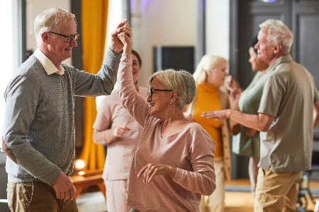
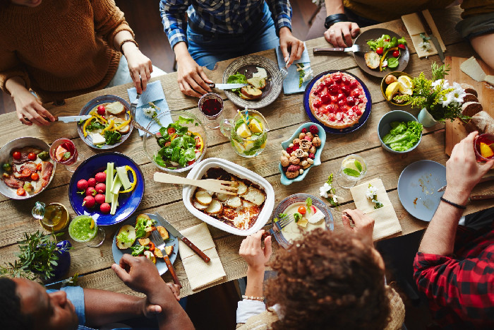
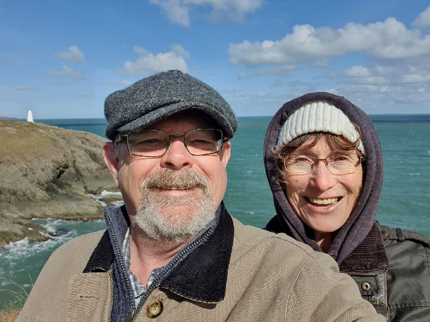
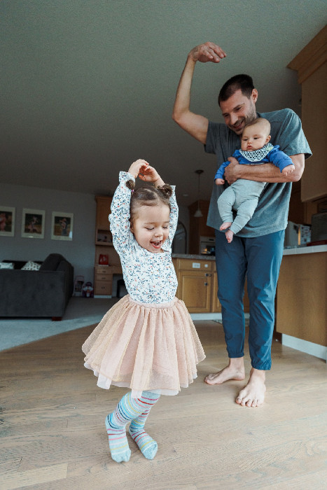
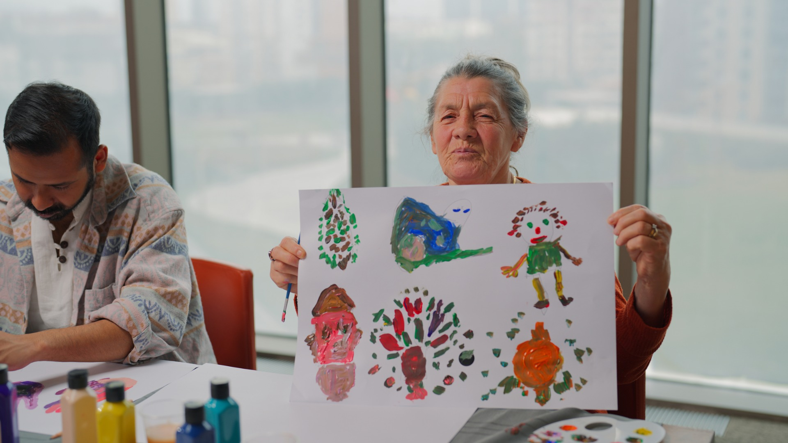

Creating the conditions for a healthier UK
Health isn't made in hospitals. It's made in the streets we live on, the work we do, the people we know and the green space at the end of the road. Healthier UK brings together everyone working to make those conditions better — across all four nations.
The everyday things that make us healthy
Initiated by the College of Medicine and the British Society of Lifestyle Medicine — and owned by everyone who joins.
You don't need permission to join
Healthier UK isn't a members' club for experts. It's for anyone who can help create health where they are — and that turns out to be almost everyone.
Community leaders
You already know your neighbourhood better than any spreadsheet does. Bring what works, take back what others have learned.
Charities & VCSE
Add your voice to a coalition arguing for the shift from treating illness to creating health — and for the funding to follow it.
Councils, mayors & NHS teams
Places are already proving this works. Connect with the people doing it and help make it the operating model, not a pilot.
Individuals
Curious, frustrated, hopeful, or all three. You don't need a title or an organisation behind you to belong here.
Three ideas we keep coming back to
Health is not made in hospitals
It is made in everyday life: in secure housing and good work, strong relationships and safe neighbourhoods, access to nature and activity, and a good start in childhood. These are the primary drivers that keep a population well, productive and resilient.
Health is something we grow
Health stops being a cost to be managed and becomes an asset to be grown. The core role of the health departments should be to catalyse a shared national mission — not to remain the sole owner of a failing system.
A healthy nation is a stronger nation
A healthier workforce and a stronger economy; lower long-term pressure on the NHS and the public finances; communities more resilient to the pandemics, extreme heat and floods this decade will bring — and a clear, distinctive health mission.
Transforming UK health policy
Britain has built a world-class service for treating illness. It has never built one for creating health. Doing so is the defining opportunity of this term — and it lowers long-term costs rather than adding to them.
The inheritance
Demand and spending keep rising while the nation's health falters. The move towards neighbourhood health is the right instinct — but it must amount to more than relocating top-down services. The opportunity now is to give it real purpose: health creation, led by places and communities.
Set the mission
A cross-government health-creation strategy — owned well beyond DHSC — framed around raising economic participation, cutting the costs of health failure, and strengthening national resilience.
Back the places already proving it
Deepen and extend the mayor-led Prevention Demonstrators and support community-led health creation, so devolved, place-based prevention becomes the operating model rather than a pilot.
Shift the money
Progressively rebalance resources from acute care towards communities leading improvements in their own health, and weigh avoided future cost in decisions — invest to save, not spend to fail.
Define what good looks like
Minimum standards for health creation, with relational capacity and shared community delivery built in, and digital tools that strengthen human connection rather than replace it.
“Health stops being a cost to be managed and becomes an asset to be grown. A healthy nation is a stronger nation.”
— The Healthier UK coalition
Four nations, one coalition
Different systems, different politics, the same idea. Find what's happening where you are.
England
Arms length bodies, the parliamentary launch, combined authorities and neighbourhood health.
Wales
Community capacity, reflections and the well-being of future generations in practice.
Scotland
How health creation is taking shape north of the border, and who is leading it.
Northern Ireland
Building the coalition and connecting communities across Northern Ireland.
What a healthier UK looks like
Everyday moments of connection, movement, nature and community — the things that actually create health.





Come and talk to us
Whether you want to collaborate, share research, bring your community in, or just find out what this is about — we'd like to hear from you. There's no wrong way to get involved.